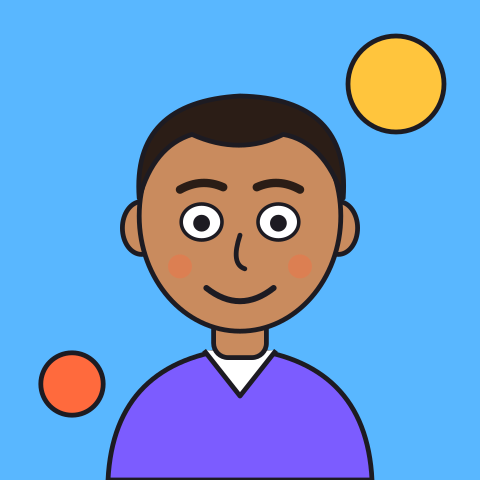

Sobre mí
Constante, curioso y resolutivo.
Un poco de quién soy, de dónde vengo y qué sé hacer.
Perfil profesional
Soy Wilson Iraldo Achagua Rodríguez, tengo 25 años y vivo en Villavicencio. Trabajo como técnico de soporte en CI24, donde me encargo del mantenimiento de máquinas de parqueadero, y estudio Ingeniería de Sistemas en la jornada nocturna de la Fundación Universitaria Compensar.
Durante más de tres años trabajé como guarda de seguridad en turnos de 12 horas. Esa experiencia me dejó disciplina, puntualidad y calma bajo presión, cualidades que hoy llevo al área de tecnología.
Me interesan especialmente la administración de servidores Linux, la seguridad informática y el desarrollo web. Uso Fedora y Windows en mis equipos personales y me gusta aprender montando cosas por mi cuenta.

| Nombre | Wilson Iraldo Achagua Rodríguez |
|---|---|
| Edad | 25 años |
| Ciudad | Villavicencio, Meta (Colombia) |
| Cargo actual | Técnico de soporte – CI24 |
| Estudios | Ingeniería de Sistemas, 6.º semestre |
| Movilidad | Moto propia |
| Idiomas | Español (nativo) · Inglés técnico (lectura) |
Habilidades técnicas
Autoevaluación de nivel. EDITAR los porcentajes según tu criterio.
Habilidades personales
- Responsabilidad: cumplo turnos y compromisos sin necesitar supervisión.
- Trabajo bajo presión: acostumbrado a jornadas largas y a resolver incidentes.
- Aprendizaje autónomo: trabajo y estudio al mismo tiempo.
- Trabajo en equipo: proyectos grupales en la universidad con roles definidos.